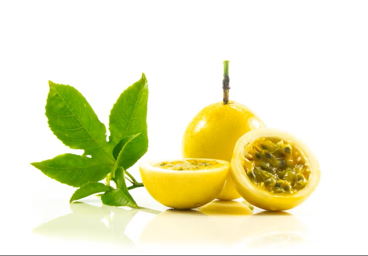

Conoce los principios que representan nuestra propuesta de productos naturales elaborados a base de maracuyá.

Ofrecer productos naturales elaborados con maracuyá, brindando calidad, sabor y confianza a nuestros clientes mediante procesos responsables y cuidadosos.
Ser una propuesta reconocida por la elaboración de productos derivados del maracuyá, destacando por su calidad, innovación y compromiso con los consumidores.
Principios que representan la elaboración y comercialización de nuestros productos naturales.
Trabajamos para ofrecer productos con excelente sabor y características naturales, cuidando cada etapa del proceso de elaboración.
Promovemos procesos responsables orientados al bienestar de nuestros clientes y al aprovechamiento adecuado de los recursos naturales.
Buscamos desarrollar nuevas alternativas de productos derivados del maracuyá para satisfacer diferentes necesidades.
Creamos relaciones basadas en la transparencia, calidad y satisfacción de nuestros consumidores.
Nuestro compromiso es brindar productos naturales elaborados a base de maracuyá, manteniendo estándares de calidad y ofreciendo una experiencia agradable para nuestros clientes.
La elaboración de nuestros productos busca conservar las características propias del maracuyá, aprovechando su sabor y propiedades para crear alternativas naturales y atractivas.